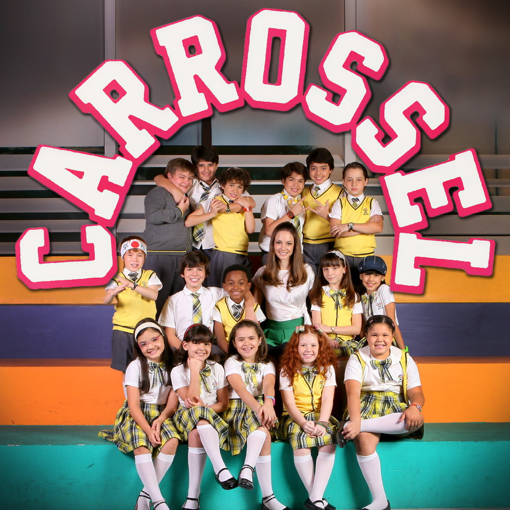

O carrossel é uma das atrações mais antigas e populares dos parques de diversão. Conhecido por suas cores vibrantes e movimento circular, ele proporciona momentos de alegria para pessoas de todas as idades. Sua atmosfera lúdica faz com que seja um símbolo da infância e da diversão
A origem do carrossel está ligada a antigos treinamentos militares realizados por cavaleiros. Durante esses exercícios, os participantes giravam em círculos para praticar suas habilidades de combate. Com o passar do tempo, essa atividade foi transformada em uma forma de
Ao longo dos séculos, o carrossel passou por diversas mudanças. Os modelos modernos ganharam elementos decorativos, músicas animadas e figuras esculpidas com riqueza de detalhes. Essas características contribuíram para aumentar sua popularidade em parques e feiras.
Os cavalos são os elementos mais tradicionais do carrossel. Geralmente decorados com cores vivas e adornos elaborados, eles se tornaram a principal marca dessa atração. Em alguns casos, outros animais e carruagens também fazem parte da composição.
A música desempenha um papel importante na experiência do carrossel. As melodias ajudam a criar um ambiente alegre e acolhedor, tornando o passeio ainda mais agradável. Esse aspecto contribui para despertar sentimentos de nostalgia em muitas pessoas.
Uma das principais vantagens do carrossel é sua acessibilidade. Por apresentar um movimento suave e controlado, ele pode ser aproveitado por crianças, jovens e adultos com relativa segurança. Isso faz com que seja uma atração familiar bastante procurada.